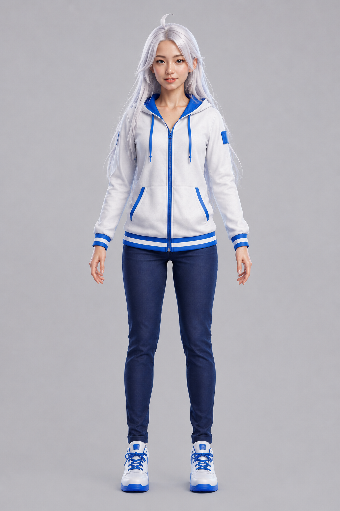
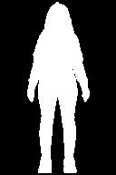
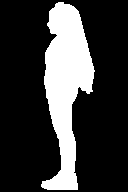
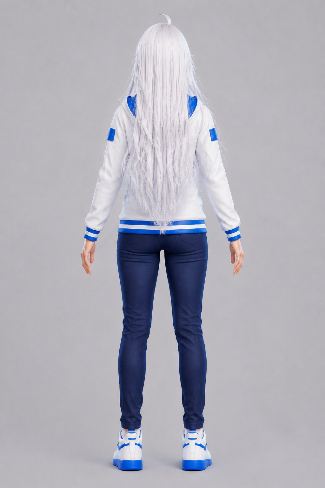
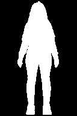

正面 Front


來源參考｜候選投影｜整數 XOR 差異
唯一決策核心為 15 位元整數遮罩的 32,767 個非空組合排序。此頁僅呈現正、左、背投影與差異遮罩；沒有骨架、蒙皮、joint、動作或即時頂點變形。


來源參考｜候選投影｜整數 XOR 差異

來源參考｜候選投影｜整數 XOR 差異


來源參考｜候選投影｜整數 XOR 差異
5232a0f17c1589b8eced2233b6a0198fe07de253e9b574acc900f6a70ec194e9
此 hash 已納入 component table 主鍵與 lineage，但沒有既定的人類身分驗收門檻。因此本頁不提供 PASS 按鈕、不寫入狀態，也不得自動升級至 HUMAN_ACCEPTED_BASE。
查表：component_table.json 完整排序：full_ranking.jsonl 最佳候選：best_candidate.json